2020年北京市中考数学试题 · 选择题 第1、2、3、4、5题 · 对应解析
1.如图是某几何体的三视图，该几何体是（ ）
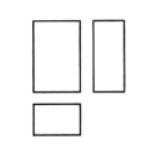
A. 圆柱B. 圆锥C. 三棱锥D. 长方体
【答案】D
【解析】
【分析】
根据三视图都
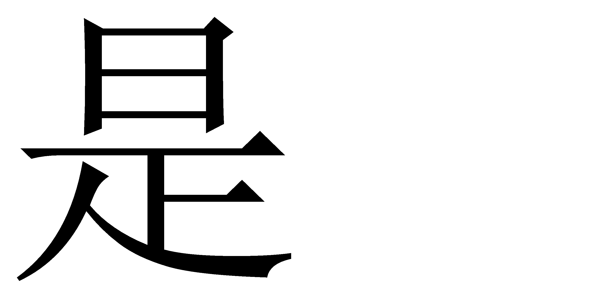
长方形即可判断该几何体为长方体．【详解】解：长方体的三视图都是长方形，
故选D．
【点睛】本题考查了几何体的三视图，解题的关键是熟知基本几何体的三视图，正确判断几何体．
2.2020年6月23日，北斗三号最后一颗全球组网卫星从西昌发射中心发射升空，6月30日成功定点于距离地球36000公里的地球同步轨道．将36000用科学记数法表示应为（ ）
A
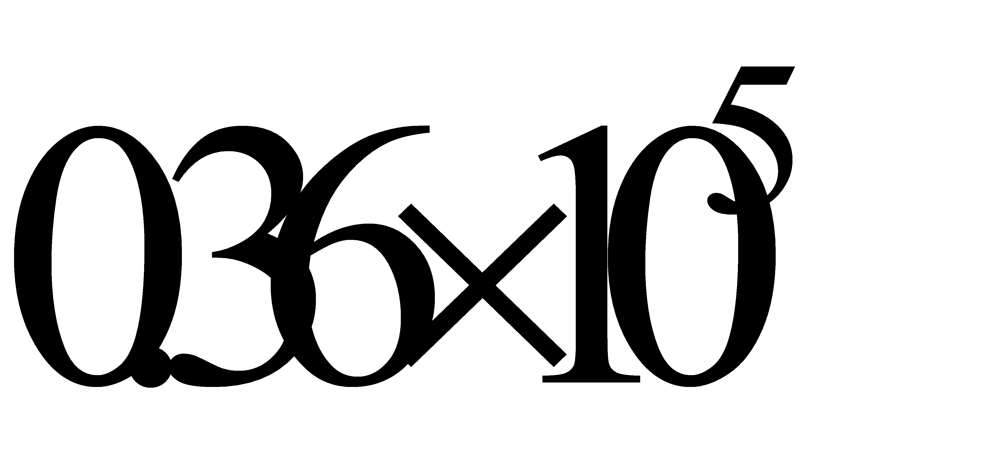
B.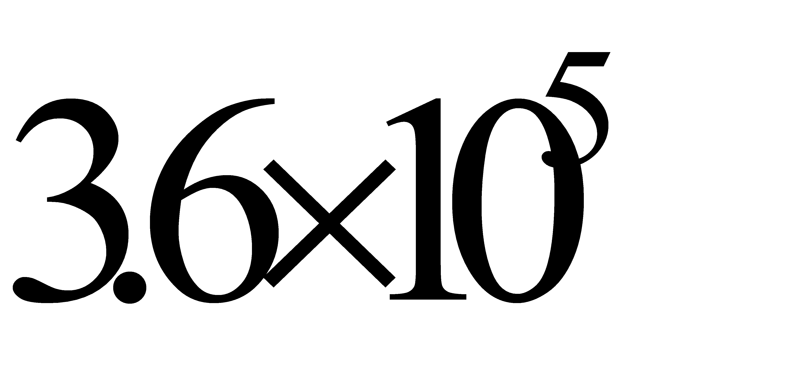
C.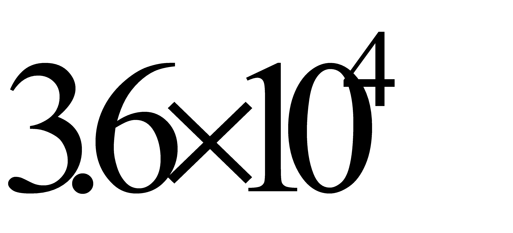
D.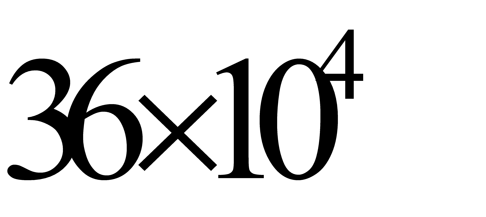
【答案】C
【解析】
【分析】
科学记数法的表示形式为a×10n的形式，其中1≤|a|＜10，n为整数．当原数绝对值大于1时，n是正数；当原数绝对值小于1时，n是负数．
【详解】解： 36000=，
故选：C．
【点睛】本题考查用科学记数法表示绝对值大于1的数，熟练掌握科学记数法的表示形式是解题的关键．
3.如图，AB和CD相交于点O，则下列结论正确的是（ ）
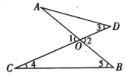
A. ∠1=∠2B. ∠2=∠3C. ∠1＞∠4+∠5D. ∠2＜∠5
【答案】A
【解析】
【分析】
根据对顶角性质、三角形外角性质分别进行判断，即可得到答案．
【详解】解：由两直线相交，对顶角相等可知A正确；
由三角形的一个外角等于它不相邻的两个内角的和可知
B选项为∠2＞∠3，
C选项为∠1=∠4+∠5，
D选项为∠2＞∠5．
故选：A．
【点睛】本题考查了三角形的外角性质，对顶角性质，解题的关键是熟练掌握三角形的外角性质进行判断．
4.下列图形中，既是中心对称图形也是轴对称图形的是（ ）
A.
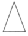
B.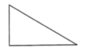
C.
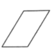
D.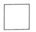
【答案】D
【解析】
【分析】
根据中心对称图形以及轴对称图形的定义即可作出判断．
【详解】解：A、是轴对称图形，不是中心对称图形，故选项错误；
B、不是轴对称图形，也不是中心对称图形，故选项错误；
C、不是轴对称图形，是中心对称图形，故选项错误；
D、既是轴对称图形，又是中心对称图形，故选项正确．
故选：D．
【点睛】本题主要考查了中心对称图形和轴对称图形的定义，正确理解定义是关键．
5.正五边形的外角和为（ ）
A. 180°B. 360°C. 540°D. 720°
【答案】B
【解析】
【分析】
根据多边形 外角和定理即可得．
外角和定理即可得．
【详解】任意多边形的外角和都为
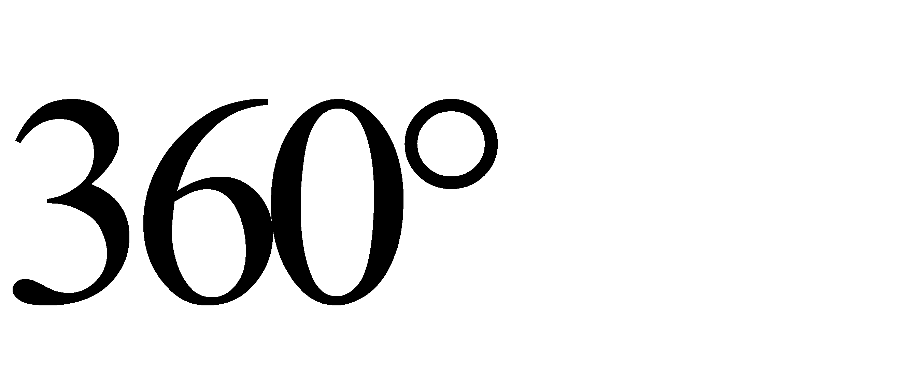
，与边数无关故选：B．
【点睛】本题考查了多边形的外角和定理，熟记多边形的外角和定理是解题关键．